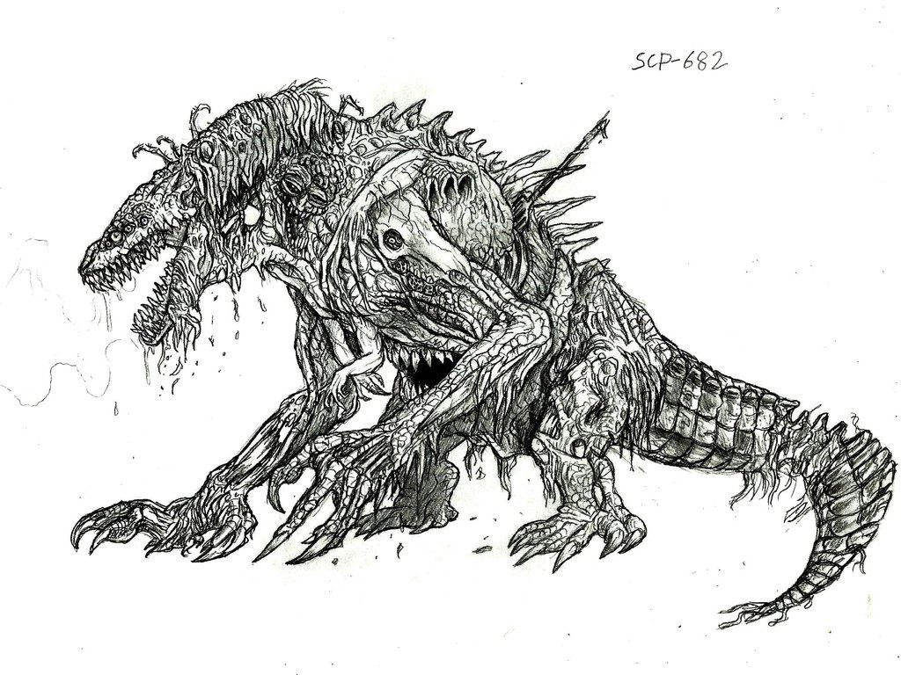

SCP-682

Scp-682 不滅孽蜥
项目编号：SCP-682
项目等级： Keter
| SCP |
Number |
Level |
dead |
| Yes |
076 |
Keter |
No |
| Yes |
173 |
Keter |
No |
| Yes |
682 |
Keter |
No |
特殊收容措施： 任何情況下必須盡可能快的摧毀SCP-682。目前，SCP小組沒有能力摧毀SCP-682，只能對它造成巨大的物理傷害。 SCP-682需要被保管在5m x 5m x 5m的容器中，用25.4cm厚的抗強酸鋼板內襯在容器壁上。用鹽酸填滿容器，直到SCP-682完全沉沒且無力反抗。如果SCP-682試圖移動,說話,或者破壞保管措施,必須快速做出反應並且全力應對可能的情況。
為了避免激怒SCP-682，禁止員工於其交談。任何未經許可的交流，會被強制制止。
由於SCP-682經常試圖破壞保管措施，保管它成為一件十分困難的事情，它對Foundation Exposure造成了非常大的威脅，SCP-682被保管在[抹去]。基金會用大量資源來確保保存地50公里內沒有人類居住。
描述： SCO-682體型巨大，類似大型的爬蟲生物，不知其源頭。它表現出極高的智慧，在與SCP-079極短的見面時，我們觀察到它們之間進行了非常複雜的交流。在保管措施中幾次與它交流，SCP-682表達它憎惡所有生命。 （參見附錄682-B）。
通過觀察，SCP-682有極高的力量，速度和反應速度，與它的體型完全不相符。通過進食和蛻皮，SCP-682能夠很快的使體型增大或者減小。 SCP-682可以從任何吃下的東西中獲取能量，無論是有機物還是無機物。看起來SCP-682的鼻孔中有過濾腮，能夠過濾任何液體中的無用物質，使它在強酸中任然能夠保持恢復能力。 SCP-682的恢復能力和適應能力令人難以置信，在身體87%被摧毀和腐爛的情況下它仍然可以移動和交流。
在一次保管失敗的事件中，SCP-682被追踪並重新捕獲，當時使用了所有MTF的力量（Mobile Task Forces），每次隊伍都不少於7人才能搞定它。日期(██-██-████), 這是第17次嘗試逃脫，第6次逃脫成功。 （參見附錄682-D）。